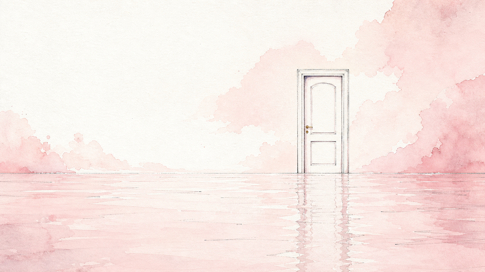
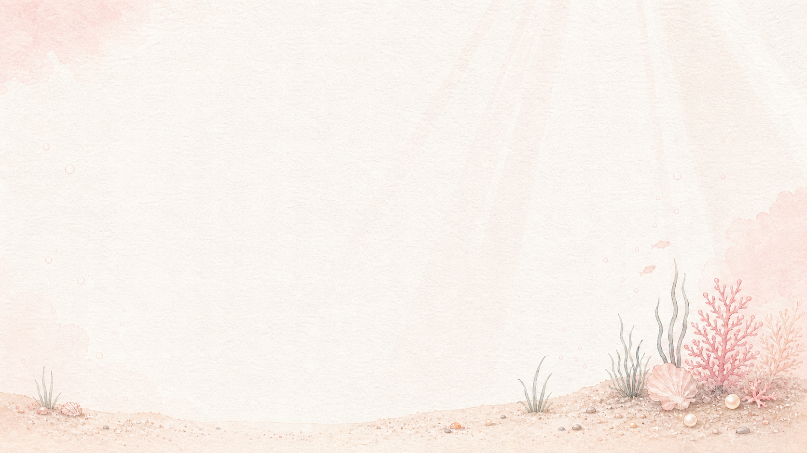

BELOW THE SURFACE
潜入水面之下。
首屏负责让人停下来，功能区负责让人顺利抵达。这里先沿用现有数据，把教程、工具与收藏重新整理成更安静的入口。

这里收着一些教程、工具和偶然发现的好东西。门没有催促你，只在水面尽头安静地等。
首屏负责让人停下来，功能区负责让人顺利抵达。这里先沿用现有数据，把教程、工具与收藏重新整理成更安静的入口。

执掌划水的 啊，请赐予我 ——
永远有年假的假象，永远不加班的自由，永远不必来的周一。